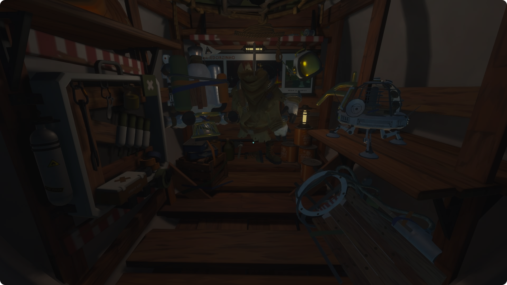
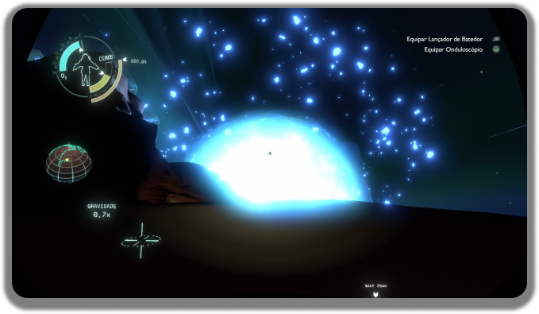
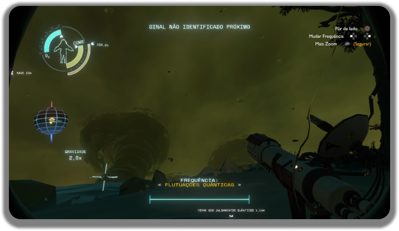

Outer Wilds
Outer Wilds é uma jornada fascinante pelo espaço que me cativou do início ao fim. A mecânica do loop temporal adiciona uma reviravolta única, permitindo-me explorar um universo vasto e misterioso no meu próprio ritmo. Os visuais deslumbrantes e a trilha sonora lindamente emocionante tornaram cada momento verdadeiramente mágico.

Outer Wilds é uma obra-prima da exploração e descoberta. A natureza aberta do jogo encoraja os jogadores a desvendar seus segredos no próprio ritmo, resultando em uma experiência profundamente pessoal e imersiva. Dos quebra-cabeças intricados às paisagens planetárias de tirar o fôlego, cada aspecto desse jogo é um testemunho de sua genialidade.
Outer Wilds é uma aventura instigante que empurra os limites da narrativa nos videogames. A narrativa interconectada e a forma como se desenrola gradualmente enquanto você explora diferentes corpos celestes é um testemunho do design meticuloso do jogo. O senso de maravilha e admiração que ele desperta é incomparável.
Outer Wilds é um jogo que recompensa a curiosidade e a persistência. Ele desafia você a desvendar seus mistérios e enigmas complexos, ao mesmo tempo que oferece uma experiência profundamente gratificante. A sensação de descoberta e conquista é simplesmente incrível.


Outer Wilds é uma experiência única e envolvente que me deixou com uma sensação de assombro e contemplação. A exploração espacial combinada com a narrativa intrigante cria uma atmosfera especial, fazendo com que cada momento seja repleto de significado e beleza.